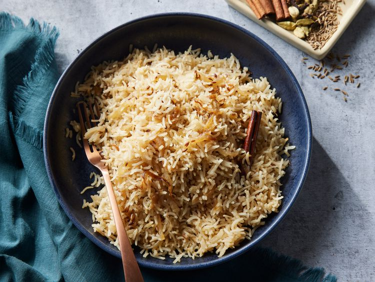
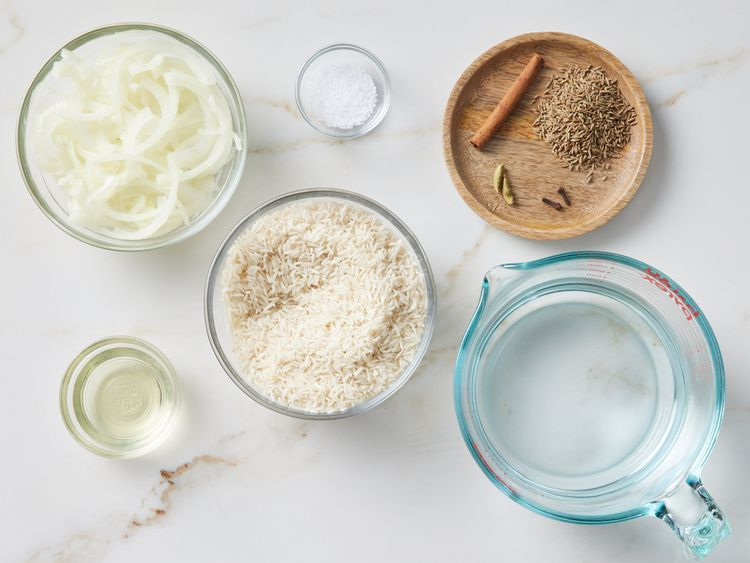
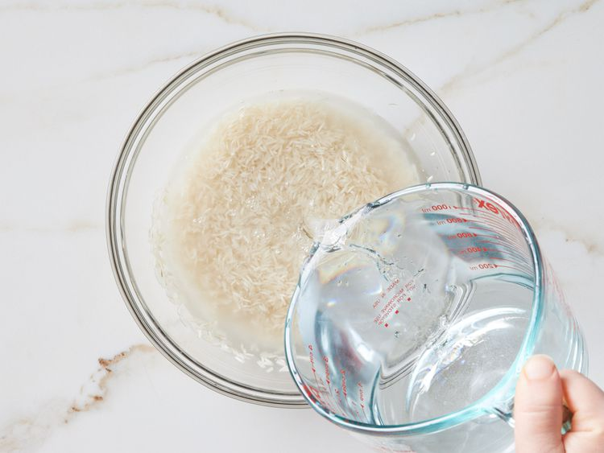
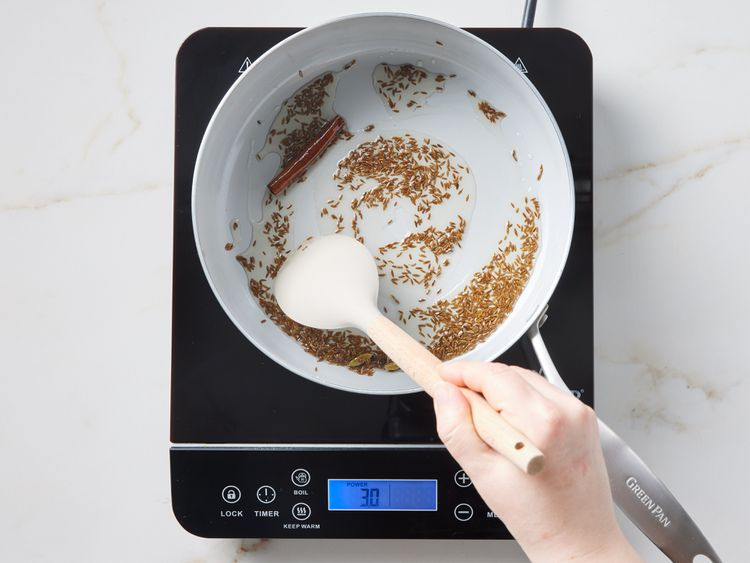
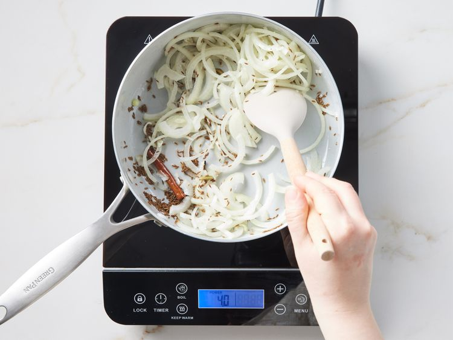
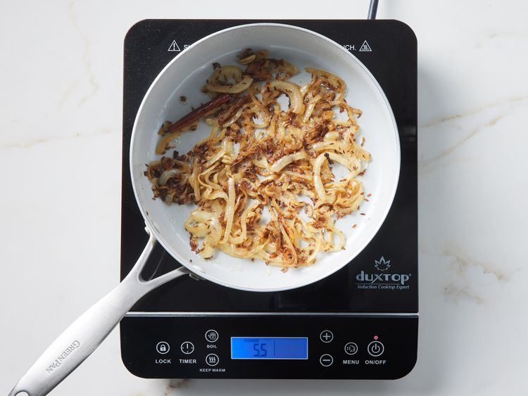
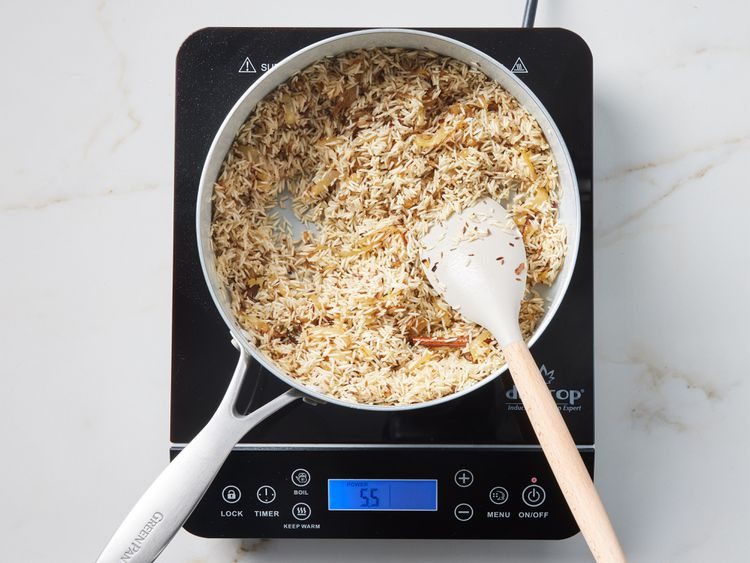
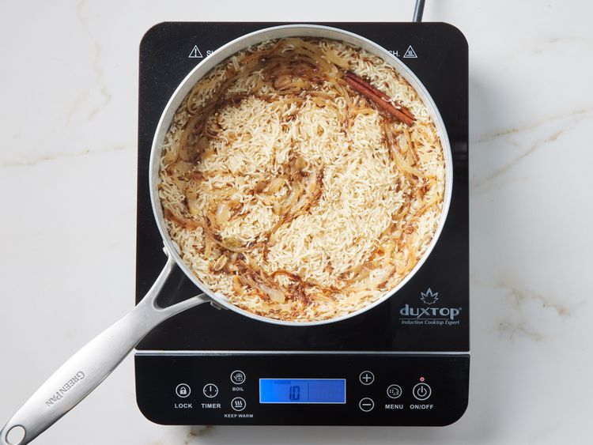

Cook Time 35 mins
Additional Time 15 mins
Total Time 50 mins
Servings 6
Savory Indian rice flavored with toasted and fragrant whole spices and fried onions. Soaking the basmati rice before cooking makes all the difference. Serve with your favorite Indian curry or dal. Make sure you warn people not to bite into the whole spices!
Gather all ingredients.

Place rice into a bowl with enough water to cover. Set aside to soak for 20 minutes.

In the last 10 minutes of soaking, heat oil in a large pot or saucepan over medium heat. Add cinnamon stick, cardamom pods, and cloves, then stir in cumin seed.

Cook and stir until fragrant and toasted, about a minute. Add sliced onion and stir.

Sauté until the onion is tender and a rich golden brown color, about 10 minutes.

Drain water from rice, and stir into the pot. Cook and stir rice until lightly toasted, about 3 minutes.

Add water and salt, and bring to a boil. Cover and reduce heat to low. Simmer until all the water has been absorbed, about 15 minutes.

Let stand for 5 minutes, then fluff with a fork before serving.